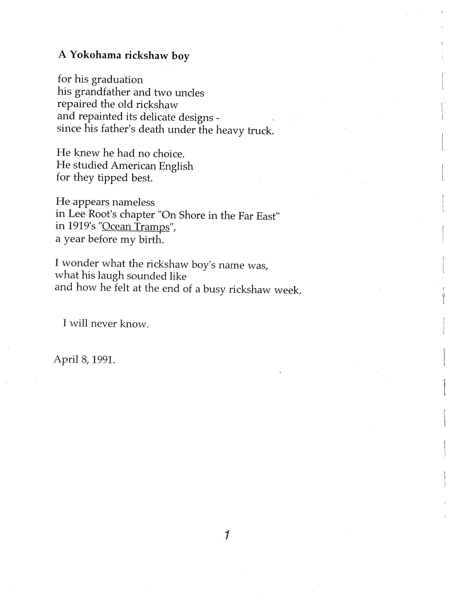

A Yokohama rickshaw boy
for his graduation
his grandfather and two uncles
repaired the old rickshaw
and repainted its delicate designs -
since his father's death under the heavy truck.
He knew he had no choice.
He studied American English
for they tipped best.
He appears nameless
in Lee Root's chapter "On Shore in the Far East"
in 1919's "Ocean Tramps",
a year before my birth.
I wonder what the rickshaw boy's name was,
what his laugh sounded like
and how he felt at the end of a busy rickshaw week.
I will never know.

Original page, Yokohama Rickshaw Boy, p. 1
Audio reading — not yet digitized.
Video — not yet digitized.
Read in another language: